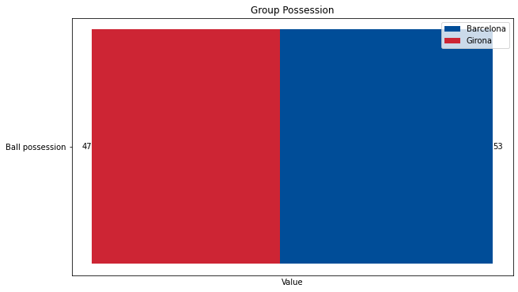
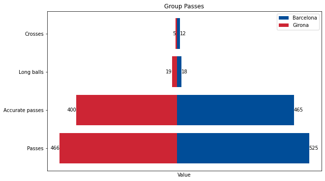
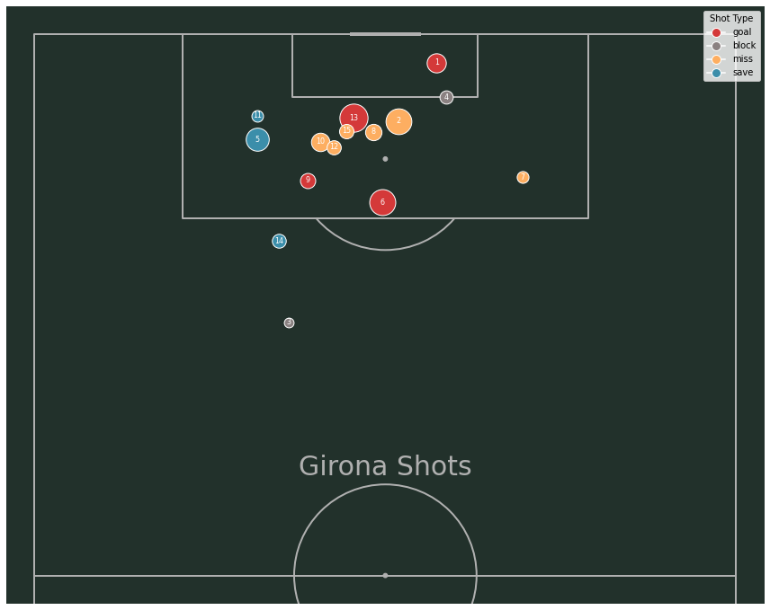
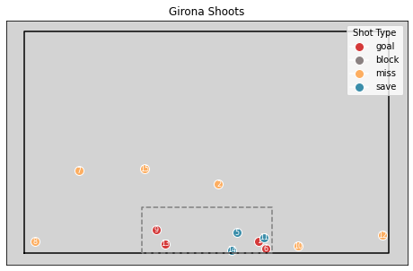
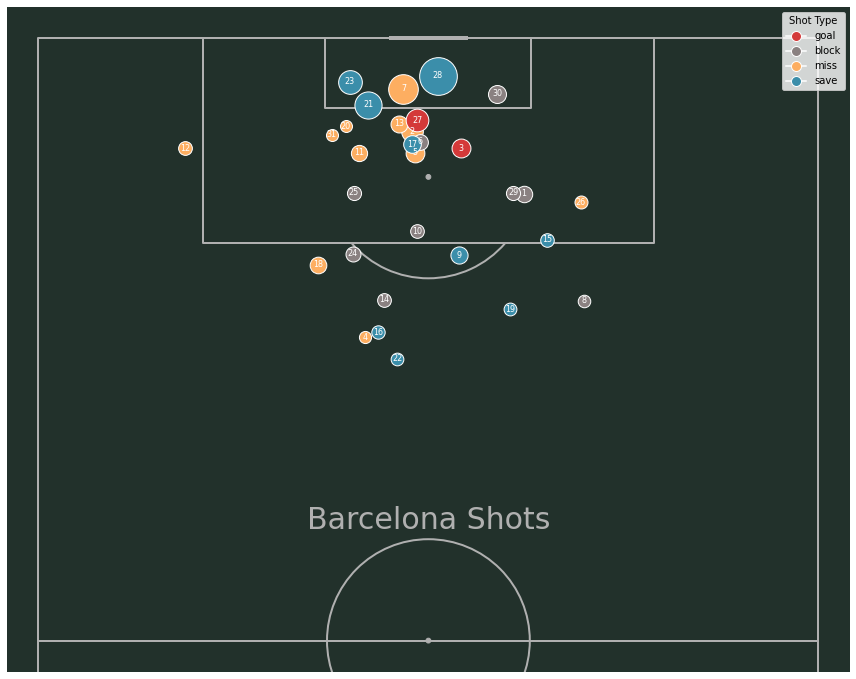
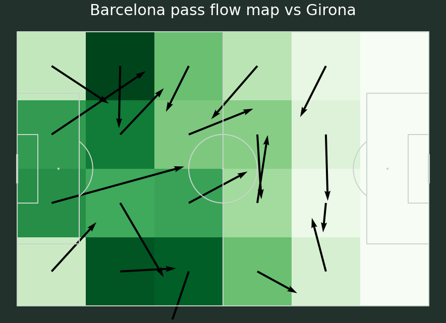
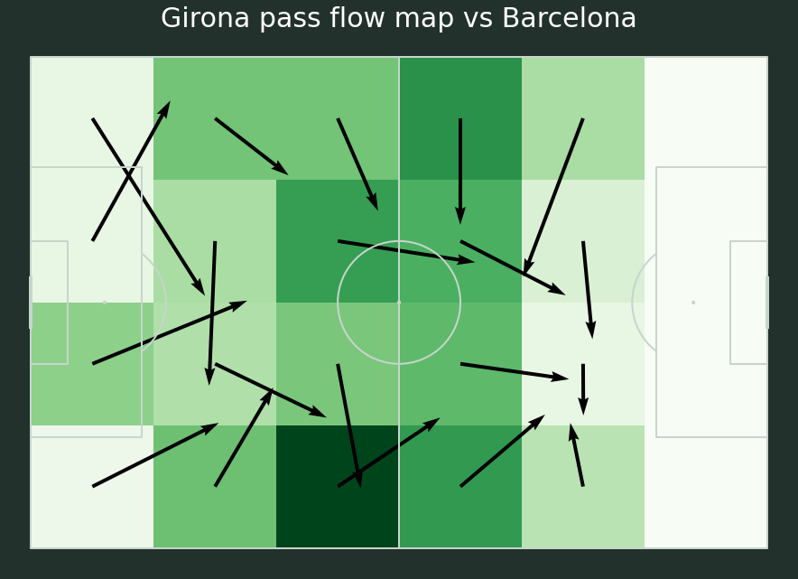

Code
from IPython.display import Image, display
display(Image(filename='img/weather.png', embed=True))from IPython.display import Image, display
display(Image(filename='img/weather.png', embed=True))display(Image(filename='img/club_stats.png', embed=True))display(Image(filename='img/history2.png', embed=True))display(Image(filename='img/odds.png', embed=True))
display(Image(filename='img/Dovbyk2.png', embed=True))import matplotlib.pyplot as plt
import seaborn as sns
import numpy as np
import json
import re
# Load data from the sofascore file
with open('data/merged_match_data.json', 'r') as f:
match_statistics = json.load(f)
def show_stats_data(group):
labels = []
first_team_values = []
second_team_values = []
for sub_item in group['statisticsItems']:
labels.append(sub_item['name'])
first_team_values.append(sub_item['homeValue'])
second_team_values.append(sub_item['awayValue'])
fig, ax = plt.subplots(figsize=(10, 6))
p1 = ax.barh(labels, first_team_values, color='#004D98', label='Barcelona')
p2 = ax.barh(labels, [-val for val in second_team_values], color='#cd2534', label='Girona')
for rect in p1:
width = rect.get_width()
ax.text(width, rect.get_y() + rect.get_height() / 2, f'{round(width, 2)}', ha='left', va='center')
for rect in p2:
width = rect.get_width()
ax.text(width, rect.get_y() + rect.get_height() / 2, f'{round(-width, 2)}', ha='right', va='center')
ax.legend()
ax.set_xlabel('Value')
ax.set_title(f'Group {group["groupName"]}')
# Remove x-axis ticks
ax.set_xticks([])
#plt.show()show_stats_data(match_statistics['0']['statistics'][0])# Assuming your JSON is stored in a variable named 'match_statistics'
show_stats_data(match_statistics['0']['statistics'][1])
show_stats_data(match_statistics['0']['statistics'][2])show_stats_data(match_statistics['0']['statistics'][3])show_stats_data(match_statistics['0']['statistics'][4])show_stats_data(match_statistics['0']['statistics'][5])
show_stats_data(match_statistics['0']['statistics'][6])show_stats_data(match_statistics['0']['statistics'][7])show_stats_data(match_statistics['0']['statistics'][8])import numpy as np
import matplotlib.pyplot as plt
from mplsoccer import Pitch
from mplsoccer.pitch import VerticalPitch
import json
# Load data from the sofascore file
with open('data/sofascore/shots.json', 'r') as f:
shotmap_data = json.load(f)# Extract shot data for Girona
shots = shotmap_data['shotmap']
# Create an mplsoccer Pitch
pitch = Pitch(pitch_type='opta', pitch_color='#22312b')
# Plot the shots on the pitch
fig, ax = pitch.draw(figsize=(12, 10))
# Separate goal and non-goal shots for Girona at away games
girona_goal_shots = [shot for shot in shots if shot['isHome'] == False and shot['shotType'] == 'goal']
girona_non_goal_shots = [shot for shot in shots if shot['isHome'] == False and shot['shotType'] != 'goal']
# Plot Girona non-goal shots with hatch
for shot in girona_non_goal_shots:
x = 100 - shot['playerCoordinates']['x']
y = 100 - shot['playerCoordinates']['y']
xg = shot['xg']
pitch.scatter(x, y, s=(xg * 1600) + 100, edgecolors='#b94b75', c='None', hatch='///', marker='o', ax=ax)
# Plot Girona goal shots with a color
for shot in girona_goal_shots:
x = 100 - shot['playerCoordinates']['x']
y = 100 - shot['playerCoordinates']['y']
xg = shot['xg']
pitch.scatter(x, y, s=(xg * 1600) + 100, edgecolors='#b94b75', linewidths=0.6, c='white', marker='football', ax=ax)
# Separate goal and non-goal shots for Barcelona at home games
barcelona_goal_shots = [shot for shot in shots if shot['isHome'] == True and shot['shotType'] == 'goal']
barcelona_non_goal_shots = [shot for shot in shots if shot['isHome'] == True and shot['shotType'] != 'goal']
# Plot Barcelona non-goal shots with hatch
for shot in barcelona_non_goal_shots:
x = shot['playerCoordinates']['x']
y = shot['playerCoordinates']['y']
xg = shot['xg']
pitch.scatter(x, y, s=(xg * 1600) + 100, edgecolors='#b94b75', c='None', hatch='///', marker='o', ax=ax)
# Plot Barcelona goal shots with a color
for shot in barcelona_goal_shots:
x = shot['playerCoordinates']['x']
y = shot['playerCoordinates']['y']
xg = shot['xg']
pitch.scatter(x, y, s=(xg * 1600) + 100, edgecolors='#b94b75', linewidths=0.6, c='white', marker='football', ax=ax)
# Add title
txt = ax.text(x=25, y=10, s='Barcelona shots', size=30, color=pitch.line_color, va='center', ha='center')
txt = ax.text(x=75, y=10, s='Girona shots', size=30, color=pitch.line_color, va='center', ha='center')
txt = ax.text(x=25, y=5, s='xG - 3.74', size=30, color=pitch.line_color, va='center', ha='center')
txt = ax.text(x=75, y=5, s='xG - 2.48', size=30, color=pitch.line_color, va='center', ha='center')
plt.show()# Extract shot data for Girona
girona_shots = shotmap_data['shotmap']
# Create an mplsoccer Pitch
pitch = VerticalPitch(pitch_type='opta', pitch_color='#22312b', half=True)
# Plot the shots on the pitch
fig, ax = pitch.draw(figsize=(12, 10))
# Dictionary to map shot types to colors
shot_type_colors = {
'goal': '#d43939',
'block': '#8a8181',
'miss': '#fdae61',
'save': '#3b8eaa'
}
# Separate goal and non-goal shots for Girona at away games
girona_goal_shots_away = [shot for shot in girona_shots if shot['isHome'] == False]
# Plot non-goal shots with hatch
for i, shot in enumerate(girona_goal_shots_away):
x = 100 - shot['playerCoordinates']['y']
y = 100 - shot['playerCoordinates']['x']
xg = shot['xg']
shot_type = shot['shotType']
color = shot_type_colors.get(shot_type)
ax.scatter(x, y, s=(xg * 1900) + 100, edgecolors='white', c=color, marker='o')
ax.text(x, y, s=str(i+1), color='white', ha='center', va='center', fontsize=8)
# Add title
txt = ax.text(x=50, y=60, s='Girona Shots', size=30, color=pitch.line_color, va='center', ha='center')
# Add legend for shot types
legend_elements = [plt.Line2D([0], [0], marker='o', color='w', label=shot_type, markerfacecolor=color, markersize=10) for shot_type, color in shot_type_colors.items()]
ax.legend(handles=legend_elements, loc='upper right', title='Shot Type')
plt.show()
# Extract shot data for Girona
shots = shotmap_data['shotmap']
# Create a function to plot the football goal, shots, and goal area
def plot_goal_shots_and_area(shotmap_data):
# Create a football goal plot
fig, ax = plt.subplots(figsize=(8, 5))
ax.set_facecolor('lightgrey') # Set background color
ax.plot([-20, -20, 120, 120, -20], [0, 120, 120, 0, 0], color='black') # Football goal outline
girona_shots = [shot for shot in shotmap_data if shot['isHome'] == False]
# Scatter shots on the goal for non-home shots
for i, shot in enumerate(girona_shots):
if shot['shotType'] != 'block':
goal_coordinates = shot['draw']['goal']
shot_type = shot['shotType']
color = shot_type_colors.get(shot_type)
if (50 - goal_coordinates['x']) >= 0:
ax.scatter(50 - ((50 - goal_coordinates['x'])*5), (100 - goal_coordinates['y'])/1.7, s=100, marker='o', edgecolors='white', c=color)
ax.text(50 - ((50 - goal_coordinates['x'])*5), (100 - goal_coordinates['y'])/1.7, s=str(i+1), color='white', ha='center', va='center', fontsize=8)
else:
ax.scatter(50 + (abs((50 - goal_coordinates['x']))*5), (100 - goal_coordinates['y'])/1.7, s=100, marker='o', edgecolors='white', c=color)
ax.text(50 + (abs((50 - goal_coordinates['x']))*5), (100 - goal_coordinates['y'])/1.7, s=str(i+1), color='white', ha='center', va='center', fontsize=8)
# Draw the football goal area
goal_area_x = [25, 25, 75, 75, 25]
goal_area_y = [0, 25, 25, 0, 0]
ax.plot(goal_area_x, goal_area_y, color='gray', linestyle='dashed', label='Goal Area')
# Hide axis labels and ticks
ax.set_xticks([])
ax.set_yticks([])
ax.set_xticklabels([])
ax.set_yticklabels([])
ax.set_title('Girona Shoots')
# Add legend for shot types
legend_elements = [plt.Line2D([0], [0], marker='o', color='w', label=shot_type, markerfacecolor=color, markersize=10) for shot_type, color in shot_type_colors.items()]
ax.legend(handles=legend_elements, loc='upper right', title='Shot Type')
# Show the plot
plt.show()
# Call the function with your shotmap data
plot_goal_shots_and_area(shots)
# Extract shot data for Girona
barcelona_shots = shotmap_data['shotmap']
# Create an mplsoccer Pitch
pitch = VerticalPitch(pitch_type='opta', pitch_color='#22312b', half=True)
# Plot the shots on the pitch
fig, ax = pitch.draw(figsize=(12, 10))
# Dictionary to map shot types to colors
shot_type_colors = {
'goal': '#d43939',
'block': '#8a8181',
'miss': '#fdae61',
'save': '#3b8eaa'
}
# Separate goal and non-goal shots for Girona at away games
barcelona_goal_shots = [shot for shot in barcelona_shots if shot['isHome'] == True]
# Plot non-goal shots with hatch
for i, shot in enumerate(barcelona_goal_shots):
x = 100 - shot['playerCoordinates']['y']
y = 100 - shot['playerCoordinates']['x']
xg = shot['xg']
shot_type = shot['shotType']
color = shot_type_colors.get(shot_type)
ax.scatter(x, y, s=(xg * 1900) + 100, edgecolors='white', c=color, marker='o')
ax.text(x, y, s=str(i+1), color='white', ha='center', va='center', fontsize=8)
# Add title
txt = ax.text(x=50, y=60, s='Barcelona Shots', size=30, color=pitch.line_color, va='center', ha='center')
# Add legend for shot types
legend_elements = [plt.Line2D([0], [0], marker='o', color='w', label=shot_type, markerfacecolor=color, markersize=10) for shot_type, color in shot_type_colors.items()]
ax.legend(handles=legend_elements, loc='upper right', title='Shot Type')
plt.show()
# Create a function to plot the football goal, shots, and goal area
def plot_goal_shots_and_area(shotmap_data):
# Create a football goal plot
fig, ax = plt.subplots(figsize=(8, 5))
ax.set_facecolor('lightgrey') # Set background color
ax.plot([-20, -20, 120, 120, -20], [0, 120, 120, 0, 0], color='black') # Football goal outline
girona_shots = [shot for shot in shotmap_data if shot['isHome'] == True]
# Scatter shots on the goal for non-home shots
for i, shot in enumerate(girona_shots):
if shot['shotType'] != 'block':
goal_coordinates = shot['draw']['goal']
shot_type = shot['shotType']
color = shot_type_colors.get(shot_type)
if (50 - goal_coordinates['x']) >= 0:
ax.scatter(50 - ((50 - goal_coordinates['x'])*5), (100 - goal_coordinates['y'])/1.7, s=100, marker='o', edgecolors='white', c=color)
ax.text(50 - ((50 - goal_coordinates['x'])*5), (100 - goal_coordinates['y'])/1.7, s=str(i+1), color='white', ha='center', va='center', fontsize=8)
else:
ax.scatter(50 + (abs((50 - goal_coordinates['x']))*5), (100 - goal_coordinates['y'])/1.7, s=100, marker='o', edgecolors='white', c=color)
ax.text(50 + (abs((50 - goal_coordinates['x']))*5), (100 - goal_coordinates['y'])/1.7, s=str(i+1), color='white', ha='center', va='center', fontsize=8)
# Draw the football goal area
goal_area_x = [25, 25, 75, 75, 25]
goal_area_y = [0, 25, 25, 0, 0]
ax.plot(goal_area_x, goal_area_y, color='gray', linestyle='dashed', label='Goal Area')
# Hide axis labels and ticks
ax.set_xticks([])
ax.set_yticks([])
ax.set_xticklabels([])
ax.set_yticklabels([])
ax.set_title('Barcelona Shoots')
# Add legend for shot types
legend_elements = [plt.Line2D([0], [0], marker='o', color='w', label=shot_type, markerfacecolor=color, markersize=10) for shot_type, color in shot_type_colors.items()]
ax.legend(handles=legend_elements, loc='upper right', title='Shot Type')
# Show the plot
plt.show()
# Call the function with your shotmap data
plot_goal_shots_and_area(shots)import json
import numpy as np
import pandas as pd
from matplotlib import rcParams
import matplotlib.pyplot as plt
from matplotlib.colors import LinearSegmentedColormap
from mplsoccer import Pitch, FontManager, Sbopen
with open("./data/WhoScored/match_1734731.json") as f:
data_dict = json.load(f)
#data_dict.keys()def extract_data_from_dict(data):
# load data from json
event_types_json = data["matchCentreEventTypeJson"]
formation_mappings = data["formationIdNameMappings"]
events_dict = data["matchCentreData"]["events"]
teams_dict = {data["matchCentreData"]['home']['teamId']: data["matchCentreData"]['home']['name'],
data["matchCentreData"]['away']['teamId']: data["matchCentreData"]['away']['name']}
players_dict = data["matchCentreData"]["playerIdNameDictionary"]
# create players dataframe
players_home_df = pd.DataFrame(data["matchCentreData"]['home']['players'])
players_home_df["teamId"] = data["matchCentreData"]['home']['teamId']
players_away_df = pd.DataFrame(data["matchCentreData"]['away']['players'])
players_away_df["teamId"] = data["matchCentreData"]['away']['teamId']
players_df = pd.concat([players_home_df, players_away_df])
players_ids = data["matchCentreData"]["playerIdNameDictionary"]
return events_dict, players_df, teams_dictevents_dict, players_df, teams_dict = extract_data_from_dict(data_dict)
home_team_id = 2783
away_team_id = 65def get_passes_df(events_dict, team_id):
df = pd.DataFrame(events_dict)
df['eventType'] = df.apply(lambda row: row['type']['displayName'], axis=1)
df['outcomeType'] = df.apply(lambda row: row['outcomeType']['displayName'], axis=1)
# filter only passes and team
passes_ids = df.index[(df['eventType'] == 'Pass') & (df['teamId'] == team_id)]
df_passes = df.loc[
passes_ids, ["id", "x", "y", "endX", "endY", "teamId", "playerId", "eventType", "outcomeType"]]
return df_passeshome_team_df_pass = get_passes_df(events_dict, home_team_id)
# home_team_df_pass# away_team_df_pass
away_team_df_pass = get_passes_df(events_dict, away_team_id)pitch = Pitch(pitch_type='statsbomb', line_zorder=2, line_color='#c7d5cc', pitch_color='#22312b')
bins = (6, 4)# Barcelona
fig, ax = pitch.draw(figsize=(16, 11), constrained_layout=True, tight_layout=False)
fig.set_facecolor('#22312b')
# plot the heatmap - darker colors = more passes originating from that square
bs_heatmap = pitch.bin_statistic(home_team_df_pass.x, home_team_df_pass.y, statistic='count', bins=bins)
hm = pitch.heatmap(bs_heatmap, ax=ax, cmap='Greens')
# plot the pass flow map with a single color and the
# arrow length equal to the average distance in the cell
fm = pitch.flow(home_team_df_pass.x, home_team_df_pass.y, home_team_df_pass.endX, home_team_df_pass.endY, color='black',
arrow_type='average', bins=bins, ax=ax)
ax_title = ax.set_title(f'Barcelona pass flow map vs Girona', fontsize=30, pad=-20, color = 'white')
#Girona
fig, ax = pitch.draw(figsize=(16, 11), constrained_layout=True, tight_layout=False)
fig.set_facecolor('#22312b')
# plot the heatmap - darker colors = more passes originating from that square
bs_heatmap = pitch.bin_statistic(away_team_df_pass.x, away_team_df_pass.y, statistic='count', bins=bins)
hm = pitch.heatmap(bs_heatmap, ax=ax, cmap='Greens')
# plot the pass flow map with a single color and the
# arrow length equal to the average distance in the cell
fm = pitch.flow(away_team_df_pass.x, away_team_df_pass.y, away_team_df_pass.endX, away_team_df_pass.endY, color='black',
arrow_type='average', bins=bins, ax=ax)
ax_title = ax.set_title(f'Girona pass flow map vs Barcelona', fontsize=30, pad=-20, color = 'white')
import json
import numpy as np
import pandas as pd
import matplotlib.pyplot as plt
from matplotlib.font_manager import FontManager
from matplotlib.colors import to_rgba
from mplsoccer import Pitch
with open("./data/WhoScored/match_1734731.json") as f:
data_dict = json.load(f)
#data_dict.keys()def extract_data_from_dict(data):
# load data from json
event_types_json = data["matchCentreEventTypeJson"]
formation_mappings = data["formationIdNameMappings"]
events_dict = data["matchCentreData"]["events"]
teams_dict = {data["matchCentreData"]['home']['teamId']: data["matchCentreData"]['home']['name'],
data["matchCentreData"]['away']['teamId']: data["matchCentreData"]['away']['name']}
players_dict = data["matchCentreData"]["playerIdNameDictionary"]
# create players dataframe
players_home_df = pd.DataFrame(data["matchCentreData"]['home']['players'])
players_home_df["teamId"] = data["matchCentreData"]['home']['teamId']
players_away_df = pd.DataFrame(data["matchCentreData"]['away']['players'])
players_away_df["teamId"] = data["matchCentreData"]['away']['teamId']
players_df = pd.concat([players_home_df, players_away_df])
players_ids = data["matchCentreData"]["playerIdNameDictionary"]
return events_dict, players_df, teams_dictevents_dict, players_df, teams_dict = extract_data_from_dict(data_dict)
len(events_dict)
teams_dict
home_team_id = 2783
away_team_id = 65
# home_team_id, away_team_iddef get_passes_df(events_dict):
df = pd.DataFrame(events_dict)
df['eventType'] = df.apply(lambda row: row['type']['displayName'], axis=1)
df['outcomeType'] = df.apply(lambda row: row['outcomeType']['displayName'], axis=1)
# create receiver column based on the next event
# this will be correct only for successfull passes
df["receiver"] = df["playerId"].shift(-1)
# filter only passes
passes_ids = df.index[df['eventType'] == 'Pass']
df_passes = df.loc[
passes_ids, ["id", "x", "y", "endX", "endY", "teamId", "playerId", "receiver", "eventType", "outcomeType"]]
return df_passespasses_df = get_passes_df(events_dict)
#passes_dfdef get_passes_between_df(team_id, passes_df, players_df):
# filter for only team
print(team_id)
passes_df = passes_df[passes_df["teamId"] == team_id]
# add column with first eleven players only
passes_df = passes_df.merge(players_df[["playerId", "isFirstEleven"]], on='playerId', how='left')
# filter on first eleven column
passes_df = passes_df[passes_df['isFirstEleven'] == True]
# calculate mean positions for players
average_locs_and_count_df = (passes_df.groupby('playerId')
.agg({'x': ['mean'], 'y': ['mean', 'count']}))
average_locs_and_count_df.columns = ['x', 'y', 'count']
average_locs_and_count_df = average_locs_and_count_df.merge(players_df[['playerId', 'name', 'shirtNo', 'position']],
on='playerId', how='left')
average_locs_and_count_df = average_locs_and_count_df.set_index('playerId')
# print(average_locs_and_count_df)
# calculate the number of passes between each position (using min/ max so we get passes both ways)
passes_player_ids_df = passes_df.loc[:, ['id', 'playerId', 'receiver', 'teamId']]
passes_player_ids_df['pos_max'] = (passes_player_ids_df[['playerId', 'receiver']].max(axis='columns'))
passes_player_ids_df['pos_min'] = (passes_player_ids_df[['playerId', 'receiver']].min(axis='columns'))
# get passes between each player
passes_between_df = passes_player_ids_df.groupby(['pos_min', 'pos_max']).id.count().reset_index()
passes_between_df.rename({'id': 'pass_count'}, axis='columns', inplace=True)
# add on the location of each player so we have the start and end positions of the lines
passes_between_df = passes_between_df.merge(average_locs_and_count_df, left_on='pos_min', right_index=True)
passes_between_df = passes_between_df.merge(average_locs_and_count_df, left_on='pos_max', right_index=True,
suffixes=['', '_end'])
return passes_between_df, average_locs_and_count_df#home_passes_between_df, home_average_locs_and_count_df = get_passes_between_df(team_id=home_team_id, passes_df=passes_df, players_df=players_df)
#home_passes_between_df#away_passes_between_df, away_average_locs_and_count_df = get_passes_between_df(team_id=away_team_id, passes_df=passes_df, players_df=players_df)
#away_passes_between_dfdef pass_network_visualization(ax, passes_between_df, average_locs_and_count_df, flipped=False):
MAX_LINE_WIDTH = 10
MAX_MARKER_SIZE = 3000
passes_between_df['width'] = (passes_between_df.pass_count / passes_between_df.pass_count.max() *
MAX_LINE_WIDTH)
average_locs_and_count_df['marker_size'] = (average_locs_and_count_df['count']
/ average_locs_and_count_df['count'].max() * MAX_MARKER_SIZE)
MIN_TRANSPARENCY = 0.3
color = np.array(to_rgba('#507293'))
color = np.tile(color, (len(passes_between_df), 1))
c_transparency = passes_between_df.pass_count / passes_between_df.pass_count.max()
c_transparency = (c_transparency * (1 - MIN_TRANSPARENCY)) + MIN_TRANSPARENCY
color[:, 3] = c_transparency
pitch = Pitch(pitch_type='opta', pitch_color='#0D182E', line_color='#5B6378')
pitch.draw(ax=ax)
if flipped:
passes_between_df['x'] = pitch.dim.right - passes_between_df['x']
passes_between_df['y'] = pitch.dim.right - passes_between_df['y']
passes_between_df['x_end'] = pitch.dim.right - passes_between_df['x_end']
passes_between_df['y_end'] = pitch.dim.right - passes_between_df['y_end']
average_locs_and_count_df['x'] = pitch.dim.right - average_locs_and_count_df['x']
average_locs_and_count_df['y'] = pitch.dim.right - average_locs_and_count_df['y']
pass_lines = pitch.lines(passes_between_df.x, passes_between_df.y,
passes_between_df.x_end, passes_between_df.y_end, lw=passes_between_df.width,
color=color, zorder=1, ax=ax)
pass_nodes = pitch.scatter(average_locs_and_count_df.x, average_locs_and_count_df.y,
s=average_locs_and_count_df.marker_size, marker='h',
color='#FEFEFC', edgecolors='#FEFEFC', linewidth=1, alpha=1, ax=ax)
for index, row in average_locs_and_count_df.iterrows():
print(row)
player_name = row["name"].split()
player_initials = "".join(word[0] for word in player_name).upper()
pitch.annotate(player_initials, xy=(row.x, row.y), c='#C4C4C4', va='center',
ha='center', size=14, ax=ax)
return pitch# create plot
fig, axes = plt.subplots(1, 2, figsize=(15, 8))
plt.subplots_adjust(left=None, bottom=None, right=None, top=None, wspace=None, hspace=None)
axes = axes.flat
plt.tight_layout()
fig.set_facecolor("#0D182E")
# plot variables
main_color = '#FBFAF5'
font_bold = FontManager(("https://github.com/google/fonts/blob/main/apache/roboto/static/"
"RobotoCondensed-Medium.ttf?raw=true"))
# home team viz
pass_network_visualization(axes[0], home_passes_between_df, home_average_locs_and_count_df)
axes[0].set_title(teams_dict[home_team_id], color=main_color, fontsize=14)#, fontproperties=font_bold.prop)
# away team viz
pass_network_visualization(axes[1], away_passes_between_df, away_average_locs_and_count_df, flipped=True)
axes[1].set_title(teams_dict[away_team_id], color=main_color, fontsize=14)#, fontproperties=font_bold.prop)
plt.suptitle(f"{teams_dict[home_team_id]} - {teams_dict[away_team_id]}", color=main_color, fontsize=42)#, fontproperties=font_bold.prop)
subtitle = "Passing networks and top combinations by volume of passes"
plt.text(-10, 120, subtitle, horizontalalignment='center', verticalalignment='center', color=main_color, fontsize=14)#, fontproperties=font_bold.prop)
plt.show()x 40.765
y 80.163333
count 60
name Daley Blind
shirtNo 17
position DC
marker_size 2432.432432
Name: 70033.0, dtype: object
x 28.95
y 52.847222
count 36
name David López
shirtNo 5
position DC
marker_size 1459.459459
Name: 92691.0, dtype: object
x 11.065909
y 42.654545
count 44
name Paulo Gazzaniga
shirtNo 13
position GK
marker_size 1783.783784
Name: 104732.0, dtype: object
x 55.165625
y 39.390625
count 32
name Viktor Tsygankov
shirtNo 8
position AMC
marker_size 1297.297297
Name: 231125.0, dtype: object
x 47.972973
y 58.371622
count 74
name Aleix García
shirtNo 14
position MC
marker_size 3000.0
Name: 280663.0, dtype: object
x 52.895238
y 51.328571
count 21
name Artem Dovbyk
shirtNo 9
position FW
marker_size 851.351351
Name: 296975.0, dtype: object
x 36.7675
y 19.115
count 40
name Eric García
shirtNo 25
position DC
marker_size 1621.621622
Name: 368091.0, dtype: object
x 46.355102
y 45.373469
count 49
name Iván Martín
shirtNo 23
position MC
marker_size 1986.486486
Name: 372473.0, dtype: object
x 50.288462
y 81.575
count 52
name Miguel Gutiérrez
shirtNo 3
position DML
marker_size 2108.108108
Name: 395788.0, dtype: object
x 72.429032
y 83.970968
count 31
name Sávio
shirtNo 16
position AMC
marker_size 1256.756757
Name: 397821.0, dtype: object
x 44.634091
y 15.740909
count 44
name Yan Couto
shirtNo 20
position DMR
marker_size 1783.783784
Name: 421975.0, dtype: object
x 74.728571
y 48.585714
count 14
name Robert Lewandowski
shirtNo 9
position FW
marker_size 500.0
Name: 29400.0, dtype: object
x 53.65
y 52.645238
count 84
name Ilkay Gündogan
shirtNo 22
position MC
marker_size 3000.0
Name: 77464.0, dtype: object
x 54.862712
y 82.579661
count 59
name João Cancelo
shirtNo 2
position DL
marker_size 2107.142857
Name: 128967.0, dtype: object
x 43.371429
y 70.136735
count 49
name Andreas Christensen
shirtNo 15
position DC
marker_size 1750.0
Name: 130331.0, dtype: object
x 55.828571
y 46.734524
count 84
name Frenkie de Jong
shirtNo 21
position MC
marker_size 3000.0
Name: 279423.0, dtype: object
x 68.476667
y 16.43
count 30
name Raphinha
shirtNo 11
position FWR
marker_size 1071.428571
Name: 300447.0, dtype: object
x 50.176667
y 13.346667
count 60
name Jules Koundé
shirtNo 23
position DR
marker_size 2142.857143
Name: 301019.0, dtype: object
x 67.795238
y 62.785714
count 21
name João Félix
shirtNo 14
position FWL
marker_size 750.0
Name: 362431.0, dtype: object
x 9.368182
y 49.268182
count 22
name Iñaki Peña
shirtNo 13
position GK
marker_size 785.714286
Name: 367164.0, dtype: object
x 35.22069
y 41.45
count 58
name Ronald Araújo
shirtNo 4
position DC
marker_size 2071.428571
Name: 384711.0, dtype: object
x 61.102083
y 34.091667
count 48
name Pedri
shirtNo 8
position MC
marker_size 1714.285714
Name: 402197.0, dtype: objectimport json
import pandas as pd
import numpy as np
import matplotlib as mpl
import matplotlib.pyplot as plt
import matplotlib.image as mpimg
from matplotlib.lines import Line2D
from matplotlib import font_manager
with open('./data/sofascore/shots.json') as f:
shotmap = json.load(f)
shots = pd.json_normalize(shotmap["shotmap"])
#shots
# Barcelona cumulative xG
home_xg_cum = shots[shots["isHome"] == True][["isHome", "shotType", "xg", "timeSeconds", "player.name"]]
home_xg_cum["minute"] = round(home_xg_cum["timeSeconds"]/60).astype(int)
home_xg_cum.sort_values(by="minute", inplace=True)
home_xg_cum["xg_cum"] = home_xg_cum["xg"].cumsum()
# Girona cumulative xG
away_xg_cum = shots[shots["isHome"] == False][["isHome", "shotType", "xg", "timeSeconds", "player.name"]]
away_xg_cum["minute"] = round(away_xg_cum["timeSeconds"]/60).astype(int)
away_xg_cum.sort_values(by="minute", inplace=True)
away_xg_cum["xg_cum"] = away_xg_cum["xg"].cumsum()
#away_xg_cum
home_goals = home_xg_cum[home_xg_cum["shotType"] == "goal"][["isHome", "minute", "player.name", "xg_cum"]]
home_goals["scorechart"] = home_goals["minute"].astype(str) + "'" + " " + home_goals["player.name"]
home_goal_count = len(home_goals)
away_goals = away_xg_cum[away_xg_cum["shotType"] == "goal"][["isHome", "minute", "player.name", "xg_cum"]]
away_goals["scorechart"] = away_goals["minute"].astype(int).astype(str) + "'" + " " + away_goals["player.name"]
away_goal_count = len(away_goals)
#away_goals
home_xg_total = round(home_xg_cum["xg"].sum(), 2).astype(str)
away_xg_total = round(away_xg_cum["xg"].sum(), 2).astype(str)def set_plot_title(suptitle, title):
plt.suptitle(suptitle, fontsize=20, fontproperties=font_properties, y=1)
plt.title(title, fontsize=14, fontproperties=font_properties, color="gray", pad=20)
def annotate_goals(goals):
for i, row in goals.iterrows():
facecolor = "blue" if row["isHome"] else "red"
plt.text(
row["minute"],
row["xg_cum"] + 0.2,
row["scorechart"],
ha="center",
va="center",
fontsize=10,
color="white",
bbox=dict(
facecolor=facecolor,
edgecolor="None",
boxstyle="round,pad=0.2"
)
)
fig, ax = plt.subplots(figsize=(15,6))
font_properties = font_manager.FontProperties(fname="./fonts/Champions-Bold.ttf")
set_plot_title(
suptitle="Barcelona 2:4 Girona",
title="La Liga, 10 December 2023 (Estadi Olímpic Lluís Companys, Spain)"
)
ax.spines["top"].set_visible(False)
ax.spines["right"].set_visible(False)
ax.spines["bottom"].set_visible(False)
ax.spines["left"].set_visible(False)
ax.step(x=home_xg_cum["minute"], y=home_xg_cum["xg_cum"], where="post", color="blue", label=f"Barcelona {home_xg_total}", linewidth=2)
ax.step(x=away_xg_cum["minute"], y=away_xg_cum["xg_cum"], where="post", color="red", label= f"Girona {away_xg_total}", linewidth=2)
ax.scatter(x=home_goals["minute"], y=home_goals["xg_cum"], marker="o", s=200, color="blue")
ax.scatter(x=away_goals["minute"], y=away_goals["xg_cum"], marker="o", s=200, color="red")
plt.xticks([0, 15, 30, 45, 60, 75, 90, 105])
plt.yticks([0, 0.5, 1, 1.5, 2, 2.5, 3])
ax.tick_params(axis="both", which="both", bottom=False, top=False, left=False, right=False)
ax.grid(True, linestyle="dotted", alpha=0.5, color="gray", linewidth=0.5)
ax.axvline(x=45, color="lightgray")
ax.axvline(x=90, color="lightgray")
plt.text(42.5, 2.9, "FH", color="dimgray", fontsize=13, fontproperties=font_properties)
plt.text(87.5, 2.9, "FT", color="dimgray", fontsize=13, fontproperties=font_properties)
annotate_goals(home_goals)
annotate_goals(away_goals)
stat_text_options = dict(ha="center", va="center", color="dimgray", fontsize=13, fontproperties=font_properties)
plt.text(107, 3.95, "Barcelona", **stat_text_options)
plt.text(107, 3.8, f"{home_goal_count} goals", **stat_text_options)
plt.text(107, 3.65, f"{home_xg_total} xG", **stat_text_options)
plt.text(105, 2.4, "Girona", **stat_text_options)
plt.text(105, 2.25, f"{away_goal_count} goals", **stat_text_options)
plt.text(105, 2.1, f"{away_xg_total} xG", **stat_text_options)
plt.ylabel("Cumulative xG", fontsize=12, labelpad=20)
plt.xlabel("Minutes", fontsize=12, labelpad=20)
home_logo = mpimg.imread("./img/Barcelona.png")
ax_home_logo = fig.add_axes([0.82, 0.8, 0.1, 0.1])
ax_home_logo.imshow(home_logo)
ax_home_logo.axis("off")
away_logo = mpimg.imread("./img/Girona.png")
ax_away_logo = fig.add_axes([0.85, 0.62, 0.1, 0.1])
ax_away_logo.imshow(away_logo)
ax_away_logo.axis("off")
plt.savefig("./img/Cumulative_xg.png", dpi=300, bbox_inches="tight")
plt.show()
import pandas as pd
from scipy import stats
import sklearn
df_understat = pd.read_json('./data/under_shot_data.json')
df_sofascore = pd.read_json('./data/sofa_shot_data.json')
def data_scale(data, scaler_type='minmax'):
from sklearn.preprocessing import MinMaxScaler
from sklearn.preprocessing import StandardScaler
from sklearn.preprocessing import Normalizer
if scaler_type == 'minmax':
scaler = MinMaxScaler()
if scaler_type == 'std':
scaler = StandardScaler()
if scaler_type == 'norm':
scaler = preprocessing.Normalizer()
scaler.fit(data)
res = scaler.transform(data)
return resdf_understat.info()
print(df_understat.head())<class 'pandas.core.frame.DataFrame'>
RangeIndex: 46 entries, 0 to 45
Data columns (total 20 columns):
# Column Non-Null Count Dtype
--- ------ -------------- -----
0 id 46 non-null int64
1 minute 46 non-null int64
2 result 46 non-null object
3 X 46 non-null float64
4 Y 46 non-null float64
5 xG 46 non-null float64
6 player 46 non-null object
7 h_a 46 non-null object
8 player_id 46 non-null int64
9 situation 46 non-null object
10 season 46 non-null int64
11 shotType 46 non-null object
12 match_id 46 non-null int64
13 h_team 46 non-null object
14 a_team 46 non-null object
15 h_goals 46 non-null int64
16 a_goals 46 non-null int64
17 date 46 non-null datetime64[ns]
18 player_assisted 41 non-null object
19 lastAction 46 non-null object
dtypes: datetime64[ns](1), float64(3), int64(7), object(9)
memory usage: 7.3+ KB
id minute result X Y xG player \
0 553813 4 MissedShots 0.920 0.624 0.027585 Raphinha
1 553815 6 BlockedShot 0.954 0.412 0.135576 Robert Lewandowski
2 553817 14 BlockedShot 0.872 0.391 0.076541 João Félix
3 553818 17 SavedShot 0.969 0.488 0.654123 Raphinha
4 553819 18 Goal 0.932 0.514 0.126038 Robert Lewandowski
h_a player_id situation season shotType match_id h_team a_team \
0 h 8026 FromCorner 2023 Head 22835 Barcelona Girona
1 h 227 OpenPlay 2023 RightFoot 22835 Barcelona Girona
2 h 7892 OpenPlay 2023 RightFoot 22835 Barcelona Girona
3 h 8026 OpenPlay 2023 LeftFoot 22835 Barcelona Girona
4 h 227 FromCorner 2023 Head 22835 Barcelona Girona
h_goals a_goals date player_assisted lastAction
0 2 4 2023-12-10 20:00:00 Ilkay Gündogan Cross
1 2 4 2023-12-10 20:00:00 Pedri Pass
2 2 4 2023-12-10 20:00:00 Pedri Pass
3 2 4 2023-12-10 20:00:00 João Cancelo Cross
4 2 4 2023-12-10 20:00:00 Raphinha Cross data_understat = df_understat[['player', 'X', 'Y', 'xG']]
print(data_understat) player X Y xG
0 Raphinha 0.920 0.624 0.027585
1 Robert Lewandowski 0.954 0.412 0.135576
2 João Félix 0.872 0.391 0.076541
3 Raphinha 0.969 0.488 0.654123
4 Robert Lewandowski 0.932 0.514 0.126038
5 Raphinha 0.864 0.305 0.040520
6 João Félix 0.872 0.596 0.085429
7 Ilkay Gündogan 0.834 0.594 0.055819
8 João Cancelo 0.964 0.601 0.434831
9 Raphinha 0.734 0.540 0.021653
10 Robert Lewandowski 0.952 0.568 0.386009
11 Raphinha 0.927 0.606 0.045518
12 Frenkie de Jong 0.756 0.421 0.024202
13 Raphinha 0.812 0.641 0.110629
14 Raphinha 0.912 0.521 0.101295
15 Ilkay Gündogan 0.741 0.579 0.020296
16 Raphinha 0.834 0.368 0.045099
17 Ilkay Gündogan 0.783 0.557 0.031369
18 Robert Lewandowski 0.943 0.554 0.122883
19 Ilkay Gündogan 0.909 0.812 0.072592
20 Ilkay Gündogan 0.890 0.575 0.098598
21 Robert Lewandowski 0.840 0.515 0.070940
22 Ilkay Gündogan 0.820 0.461 0.061176
23 Jules Koundé 0.782 0.301 0.015336
24 Ilkay Gündogan 0.958 0.532 0.603760
25 Fermín López 0.916 0.502 0.131917
26 Fermín López 0.905 0.517 0.076984
27 Ferrán Torres 0.728 0.590 0.013073
28 Ilkay Gündogan 0.909 0.458 0.103959
29 Robert Lewandowski 0.923 0.521 0.354385
30 Fermín López 0.857 0.382 0.106343
31 David López 0.911 0.556 0.092746
32 Viktor Tsygankov 0.786 0.681 0.024357
33 Artem Dovbyk 0.923 0.545 0.520011
34 Artem Dovbyk 0.902 0.580 0.056151
35 Miguel Gutiérrez 0.925 0.683 0.062417
36 Miguel Gutiérrez 0.898 0.625 0.094226
37 Miguel Gutiérrez 0.854 0.632 0.061740
38 Viktor Tsygankov 0.910 0.517 0.120849
39 Yan Couto 0.868 0.305 0.049720
40 Valery Fernández 0.845 0.504 0.315130
41 Sávio 0.903 0.683 0.400269
42 Cristhian Stuani 0.921 0.390 0.039501
43 Jhon Solis 0.734 0.638 0.015792
44 Jhon Solis 0.930 0.473 0.614128
45 Cristhian Stuani 0.984 0.433 0.470938df_sofascore.info()
print(df_sofascore.head())<class 'pandas.core.frame.DataFrame'>
RangeIndex: 46 entries, 0 to 45
Data columns (total 20 columns):
# Column Non-Null Count Dtype
--- ------ -------------- -----
0 player 46 non-null object
1 isHome 46 non-null bool
2 shotType 46 non-null object
3 situation 46 non-null object
4 playerCoordinates 46 non-null object
5 bodyPart 46 non-null object
6 goalMouthLocation 46 non-null object
7 goalMouthCoordinates 46 non-null object
8 blockCoordinates 24 non-null object
9 xg 46 non-null float64
10 id 46 non-null int64
11 time 46 non-null int64
12 addedTime 7 non-null float64
13 timeSeconds 46 non-null int64
14 draw 46 non-null object
15 reversedPeriodTime 46 non-null int64
16 reversedPeriodTimeSeconds 46 non-null int64
17 incidentType 46 non-null object
18 goalType 6 non-null object
19 xgot 18 non-null float64
dtypes: bool(1), float64(3), int64(5), object(11)
memory usage: 7.0+ KB
player isHome shotType \
0 {'name': 'Fermín López', 'firstName': 'Fermín ... True block
1 {'name': 'Cristhian Stuani', 'slug': 'cristhia... False goal
2 {'name': 'Robert Lewandowski', 'firstName': ''... True miss
3 {'name': 'İlkay Gündoğan', 'slug': 'ilkay-gund... True goal
4 {'name': 'Ferran Torres', 'slug': 'ferran-torr... True miss
situation playerCoordinates bodyPart goalMouthLocation \
0 regular {'x': 12.9, 'y': 62.2, 'z': 0} right-foot low-centre
1 assisted {'x': 2.6, 'y': 57.3, 'z': 0} right-foot low-right
2 assisted {'x': 7.7, 'y': 47.9, 'z': 0} head close-right
3 assisted {'x': 9.1, 'y': 54.2, 'z': 0} left-foot low-left
4 assisted {'x': 24.8, 'y': 41.9, 'z': 0} right-foot close-right
goalMouthCoordinates blockCoordinates xg \
0 {'x': 0, 'y': 51.2, 'z': 19} {'x': 10.7, 'y': 59.9, 'z': 0} 0.089518
1 {'x': 0, 'y': 46, 'z': 11.4} NaN 0.186681
2 {'x': 0, 'y': 41.3, 'z': 15.3} NaN 0.195696
3 {'x': 0, 'y': 52.6, 'z': 19} NaN 0.134803
4 {'x': 0, 'y': 41.3, 'z': 13.9} NaN 0.024742
id time addedTime timeSeconds \
0 2396401 90 7.0 5791
1 2396400 90 5.0 5674
2 2396398 90 3.0 5557
3 2396394 90 2.0 5474
4 2396393 90 1.0 5415
draw reversedPeriodTime \
0 {'start': {'x': 62.2, 'y': 12.9}, 'block': {'x... 1
1 {'start': {'x': 57.3, 'y': 2.6}, 'end': {'x': ... 1
2 {'start': {'x': 47.9, 'y': 7.7}, 'end': {'x': ... 1
3 {'start': {'x': 54.2, 'y': 9.1}, 'end': {'x': ... 1
4 {'start': {'x': 41.9, 'y': 24.8}, 'end': {'x':... 1
reversedPeriodTimeSeconds incidentType goalType xgot
0 509 shot NaN NaN
1 626 shot regular 0.7595
2 743 shot NaN NaN
3 826 shot regular 0.2616
4 885 shot NaN NaN data_sofascore = df_sofascore[['player', 'playerCoordinates', 'xg']]
print(data_sofascore.head()) player \
0 {'name': 'Fermín López', 'firstName': 'Fermín ...
1 {'name': 'Cristhian Stuani', 'slug': 'cristhia...
2 {'name': 'Robert Lewandowski', 'firstName': ''...
3 {'name': 'İlkay Gündoğan', 'slug': 'ilkay-gund...
4 {'name': 'Ferran Torres', 'slug': 'ferran-torr...
playerCoordinates xg
0 {'x': 12.9, 'y': 62.2, 'z': 0} 0.089518
1 {'x': 2.6, 'y': 57.3, 'z': 0} 0.186681
2 {'x': 7.7, 'y': 47.9, 'z': 0} 0.195696
3 {'x': 9.1, 'y': 54.2, 'z': 0} 0.134803
4 {'x': 24.8, 'y': 41.9, 'z': 0} 0.024742 data_sofascore['player_name'] = [x['name'] for x in data_sofascore['player']]
data_sofascore['X'] = [x['x'] for x in data_sofascore['playerCoordinates']]
data_sofascore['Y'] = [x['y'] for x in data_sofascore['playerCoordinates']]
data_sofascore['player_name']data_sofascore = data_sofascore[['player_name', 'X', 'Y', 'xg']]
print(data_sofascore.head()) player_name X Y xg
0 Fermín López 12.9 62.2 0.089518
1 Cristhian Stuani 2.6 57.3 0.186681
2 Robert Lewandowski 7.7 47.9 0.195696
3 İlkay Gündoğan 9.1 54.2 0.134803
4 Ferran Torres 24.8 41.9 0.024742print(data_understat.head()) player X Y xG
0 Raphinha 0.920 0.624 0.027585
1 Robert Lewandowski 0.954 0.412 0.135576
2 João Félix 0.872 0.391 0.076541
3 Raphinha 0.969 0.488 0.654123
4 Robert Lewandowski 0.932 0.514 0.126038len(data_understat)46len(data_sofascore)46set(data_understat['player']){'Artem Dovbyk',
'Cristhian Stuani',
'David López',
'Fermín López',
'Ferrán Torres',
'Frenkie de Jong',
'Ilkay Gündogan',
'Jhon Solis',
'João Cancelo',
'João Félix',
'Jules Koundé',
'Miguel Gutiérrez',
'Raphinha',
'Robert Lewandowski',
'Sávio',
'Valery Fernández',
'Viktor Tsygankov',
'Yan Couto'}set(data_sofascore['player_name']){'Artem Dovbyk',
'Cristhian Stuani',
'David López',
'Fermín López',
'Ferran Torres',
'Frenkie de Jong',
'Jhon Solís',
'João Cancelo',
'João Félix',
'Jules Koundé',
'Miguel Gutiérrez',
'Raphinha',
'Robert Lewandowski',
'Sávio',
'Valery Fernández',
'Viktor Tsygankov',
'Yan Couto',
'İlkay Gündoğan'}data_understat.describe()| X | Y | xG | |
|---|---|---|---|
| count | 46.000000 | 46.000000 | 46.000000 |
| mean | 0.876217 | 0.528065 | 0.156358 |
| std | 0.069200 | 0.108335 | 0.181039 |
| min | 0.728000 | 0.301000 | 0.013073 |
| 25% | 0.835500 | 0.464000 | 0.045203 |
| 50% | 0.902500 | 0.536000 | 0.081206 |
| 75% | 0.923000 | 0.595500 | 0.130447 |
| max | 0.984000 | 0.812000 | 0.654123 |
data_sofascore.describe()| X | Y | xg | |
|---|---|---|---|
| count | 46.000000 | 46.000000 | 46.000000 |
| mean | 12.200000 | 47.452174 | 0.135148 |
| std | 6.578382 | 10.731133 | 0.142474 |
| min | 2.600000 | 18.800000 | 0.009018 |
| 25% | 7.700000 | 40.475000 | 0.044768 |
| 50% | 9.600000 | 46.500000 | 0.084365 |
| 75% | 16.525000 | 53.400000 | 0.159605 |
| max | 26.600000 | 69.900000 | 0.694513 |
data_sofascore_scaled = data_scale(data_sofascore[['X', 'Y', 'xg']])data_sofascore_scaled = pd.DataFrame(data_sofascore_scaled, columns=['X', 'Y', 'xg'])
print(data_sofascore_scaled.head()) X Y xg
0 0.429167 0.849315 0.117434
1 0.000000 0.753425 0.259174
2 0.212500 0.569472 0.272326
3 0.270833 0.692759 0.183495
4 0.925000 0.452055 0.022938import numpy as np
import matplotlib.pyplot as plt
# Функція для побудови графіка типу павутиння
def radar_chart(ax, data, label, color):
angles = np.linspace(0, 2*np.pi, len(data), endpoint=False)
data = np.concatenate((data, [data[0]])) # Замикання кола
angles = np.concatenate((angles, [angles[0]])) # Замикання кола
ax.plot(angles, data, label=label, color=color)
ax.fill(angles, data, alpha=0.2, color=color)
# Дані категорій (імена гравців). Треба привести імена до одного - İlkay Gündoğan
categories_understat = list(set(data_understat['player']))
categories_sofascore = list(set(data_sofascore['player_name']))
# Побудувати графік 1
plt.figure(figsize=(12, 6))
ax1 = plt.subplot(1, 2, 1, polar=True)
radar_chart(ax1, data_understat['X'], 'Набір даних X understat', 'blue')
ax1.set_xticks(np.linspace(0, 2*np.pi, len(categories_understat), endpoint=False))
ax1.set_xticklabels(categories_understat)
ax1.set_title('Набір даних X understat')
ax1.legend()
# Побудувати графік 2
ax2 = plt.subplot(1, 2, 2, polar=True)
radar_chart(ax2, data_sofascore_scaled['X'], 'Набір даних X sofascore', 'orange')
ax2.set_xticks(np.linspace(0, 2*np.pi, len(categories_sofascore), endpoint=False))
ax2.set_xticklabels(categories_sofascore)
ax2.set_title('Набір даних X sofascore')
ax2.legend()
# Показати графіки
plt.tight_layout()
plt.show()# Побудувати графік 1
plt.figure(figsize=(12, 6))
ax1 = plt.subplot(1, 2, 1, polar=True)
radar_chart(ax1, data_understat['Y'], 'Набір даних Y understat', 'blue')
ax1.set_xticks(np.linspace(0, 2*np.pi, len(categories_understat), endpoint=False))
ax1.set_xticklabels(categories_understat)
ax1.set_title('Набір даних Y understat')
ax1.legend()
# Побудувати графік 2
ax2 = plt.subplot(1, 2, 2, polar=True)
radar_chart(ax2, data_sofascore_scaled['Y'], 'Набір даних Y sofascore', 'orange')
ax2.set_xticks(np.linspace(0, 2*np.pi, len(categories_sofascore), endpoint=False))
ax2.set_xticklabels(categories_sofascore)
ax2.set_title('Набір даних Y sofascore')
ax2.legend()
# Показати графіки
plt.tight_layout()
plt.show()# Побудувати графік 1
plt.figure(figsize=(12, 6))
ax1 = plt.subplot(1, 2, 1, polar=True)
radar_chart(ax1, data_understat['xG'], 'Набір даних XG understat', 'blue')
ax1.set_xticks(np.linspace(0, 2*np.pi, len(categories_understat), endpoint=False))
ax1.set_xticklabels(categories_understat)
ax1.set_title('Набір даних XG understat')
ax1.legend()
# Побудувати графік 2
ax2 = plt.subplot(1, 2, 2, polar=True)
radar_chart(ax2, data_sofascore_scaled['xg'], 'Набір даних XG sofascore', 'orange')
ax2.set_xticks(np.linspace(0, 2*np.pi, len(categories_sofascore), endpoint=False))
ax2.set_xticklabels(categories_sofascore)
ax2.set_title('Набір даних XG sofascore')
ax2.legend()
# Показати графіки
plt.tight_layout()
plt.show()import json
import pandas as pd
import matplotlib.pyplot as plt
import numpy as np
# Путь к JSON файлам с данными игроков
player1_file = './data/player_match_data_11736.json'
player2_file = './data/player_match_data_227.json'# Загрузка данных об игроках
player1_stats = pd.read_json(player1_file)
player2_stats = pd.read_json(player2_file)
# Создание DataFrame для удобства анализа и визуализации
df1 = pd.DataFrame(player1_stats)
df2 = pd.DataFrame(player2_stats)
#print(df1.describe())
#df1.info()
#print(df1.head())
#print(df2.describe())
#df2.info()
#print(df2.head())# Имена показателей статистики
stats_labels = [ 'shots', 'xG', 'time', 'position', 'goals', 'xA', 'assists', 'key_passes', 'npg', 'npxG', 'xGChain', 'xGBuildup']
# Значения показателей статистики для каждого игрока
player1_values = [df1[label].iloc[0] for label in stats_labels]
player2_values = [df2[label].iloc[0] for label in stats_labels]
# Углы для графика типа радар
num_vars = len(stats_labels)
angles = np.linspace(0, 2 * np.pi, num_vars, endpoint=False).tolist()
# Добавление первого элемента в конец списка, чтобы график был замкнутым
player1_values += player1_values[:1]
player2_values += player2_values[:1]
angles += angles[:1]# Построение графика типа радар
fig, ax = plt.subplots(figsize=(8, 8), subplot_kw=dict(polar=True))
ax.fill(angles, player1_values, color='red', alpha=0.25, label='Artem Dovbyk')
ax.fill(angles, player2_values, color='blue', alpha=0.25, label='Robert Lewandowski')
ax.set_yticklabels([])
ax.set_xticks(angles[:-1])
ax.set_xticklabels(stats_labels, fontsize=12, fontweight='bold')
ax.legend(loc='upper right', fontsize='large')
plt.title('Comparison of Player Statistics', size=16, weight='bold')
plt.show()